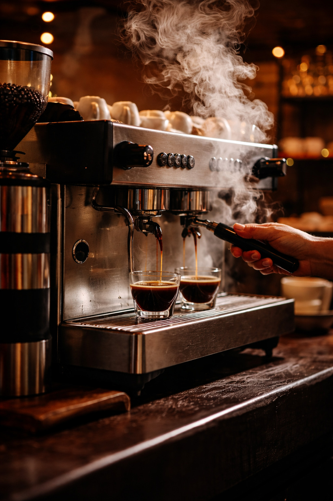
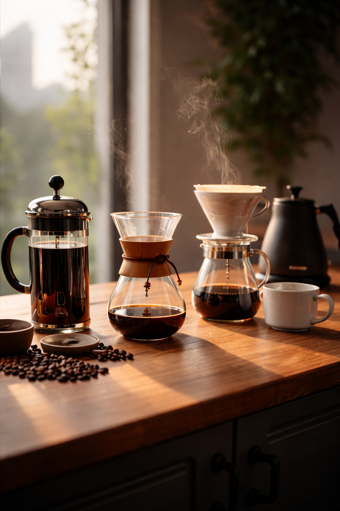

Métodos de preparación
Existen múltiples formas de preparar café, cada una con sus propias características y matices de sabor. El método que elijas influirá directamente en el cuerpo, la acidez y el aroma de tu taza. Estos son los métodos más populares:
- Espresso — Método de alta presión que produce un café concentrado e intenso
- Cafetera francesa — Inmersión completa que resalta los aceites naturales del café
- Filtro por goteo — Proceso suave que produce un café limpio y aromático
- Moka italiana — Extracción por vapor que crea un café fuerte y con cuerpo
- Cold brew — Infusión en frío durante horas para un sabor suave y dulce
- Chemex — Filtrado lento que produce un café limpio con gran claridad de sabor

